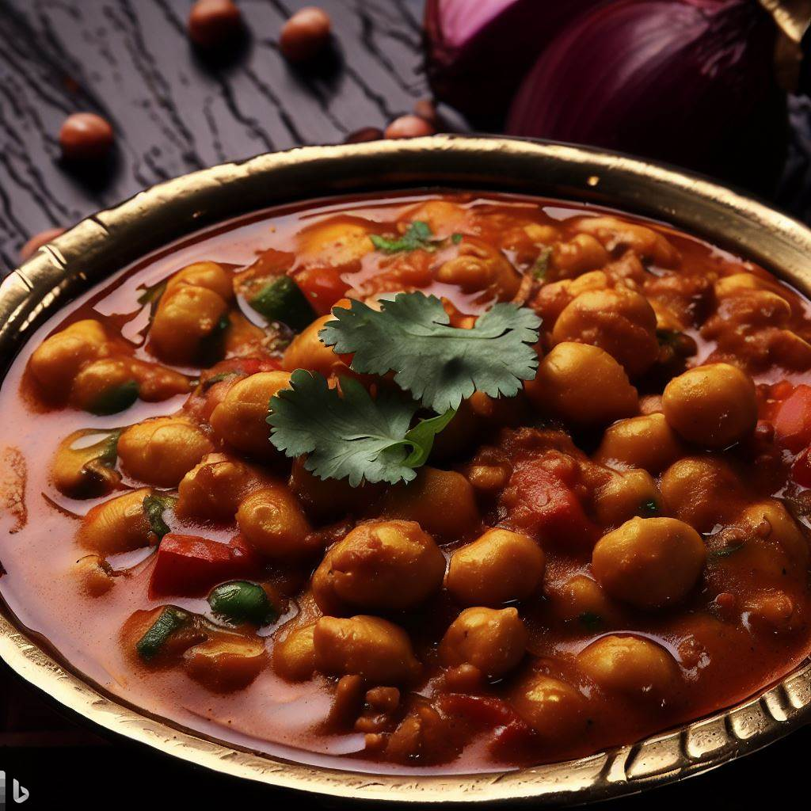

Chana Masala

Description
A flavorful and spicy dish made with chickpeas cooked in a tomato-based gravy with Indian spices.
Ingredients
- 2 cans chickpeas, drained and rinsed
- 2 tablespoons oil
- 1 onion, chopped
- 2 garlic cloves, minced
- 1 tablespoon ginger, grated
- 1 teaspoon cumin seeds
- 1 teaspoon coriander powder
- 1/2 teaspoon turmeric powder
- 1/2 teaspoon garam masala
- 1/4 teaspoon cayenne pepper
- 1 can diced tomatoes
- 1/2 cup water
- Salt to taste
- Fresh coriander leaves, chopped (for garnish)
Steps
- Heat oil in a large pan over medium heat. Add the cumin seeds and fry until fragrant.
- Add the chopped onion, minced garlic, and grated ginger. Cook until the onion is soft and translucent.
- Add the coriander powder, turmeric powder, garam masala, and cayenne pepper. Cook for a minute.
- Add the diced tomatoes and water. Simmer for 10-15 minutes or until the mixture thickens.
- Add the chickpeas and salt to taste. Simmer for another 10-15 minutes or until the chickpeas are heated through and coated in the sauce.
- Garnish with fresh coriander leaves and serve hot with naan or rice.
Return to Homepage